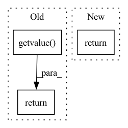

Pattern ID :19381

Before Change
img = trans_fn.center_crop(img, size)
buffer = BytesIO()
img.save(buffer, format="jpeg", quality=quality)
val = buffer.getvalue()
return val
def resize_multiple(img, sizes=(128, 256, 512, 1024), resample=Image.LANCZOS, quality=100):
After Change
if(img.size[0] != size):
img = trans_fn.resize(img, size, resample)
img = trans_fn.center_crop(img, size)
return img
def image_convert_bytes(img):
In pattern: SUPERPATTERN
Frequency: 3
Non-data size: 3
Instances
Fragment ID: 63257780
Project Name: janspiry/image-super-resolution-via-iterative-refinement
Commit Name: 2102acb5c88eef281357ba2a810b72b0f9b6ea71
Time: 2021-07-29
Author: lw_jiang@foxmail.com
File Name: prepare_data.py
M Class Name: AnonimousClass
N Class Name: AnonimousClass
M Method Name: resize_and_convert(3)
N Method Name: resize_and_convert(4)
M Parent Class:
N Parent Class:
M File Name: prepare_data.py
N File Name: prepare_data.py
M Start Line: 13
M End Line: 20
N Start Line: 14
N End Line: 17
'>
Before Change
if 0 < store.gen_chars <= buf_len:
break
return PredString(buf.getvalue())
After Change
if "<n>" in decoded:
return PredString(decoded.replace("<n>", ""))
elif 0 < store.gen_chars <= len(decoded):
return PredString(decoded)
'>
Fragment ID: 63257777
Project Name: gretelai/gretel-synthetics
Commit Name: 4d63b79cfe382412631ffb922875dab9722ed0a1
Time: 2020-08-04
Author: 9696606+johntmyers@users.noreply.github.com
File Name: src/gretel_synthetics/generator.py
M Class Name: AnonimousClass
N Class Name: AnonimousClass
M Method Name: _predict_chars(4)
N Method Name: _predict_chars(4)
M Parent Class:
N Parent Class:
M File Name: src/gretel_synthetics/generator.py
N File Name: src/gretel_synthetics/generator.py
M Start Line: 224
M End Line: 255
N Start Line: 223
N End Line: 249
'>
Before Change
img = trans_fn.center_crop(img, size)
buffer = BytesIO()
img.save(buffer, format="jpeg", quality=quality)
val = buffer.getvalue()
return val
def resize_multiple(img, sizes=(128, 256, 512, 1024), resample=Image.LANCZOS, quality=100):
After Change
if(img.size[0] != size):
img = trans_fn.resize(img, size, resample)
img = trans_fn.center_crop(img, size)
return img
def image_convert_bytes(img):
'>
Fragment ID: 63257779
Project Name: janspiry/image-super-resolution-via-iterative-refinement
Commit Name: f31ba80bf1ca1a081fb62bc12f58ee6ff518a9bd
Time: 2021-07-29
Author: jiangliangwei@tetras.com
File Name: prepare_data.py
M Class Name: AnonimousClass
N Class Name: AnonimousClass
M Method Name: resize_and_convert(3)
N Method Name: resize_and_convert(4)
M Parent Class:
N Parent Class:
M File Name: prepare_data.py
N File Name: prepare_data.py
M Start Line: 13
M End Line: 20
N Start Line: 14
N End Line: 17